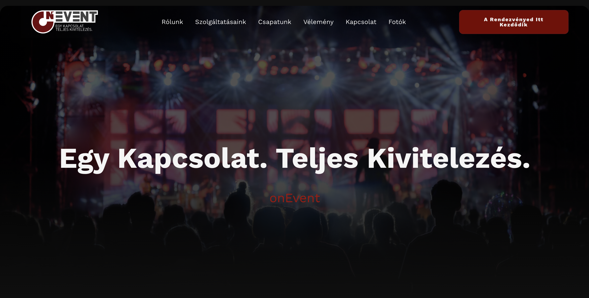
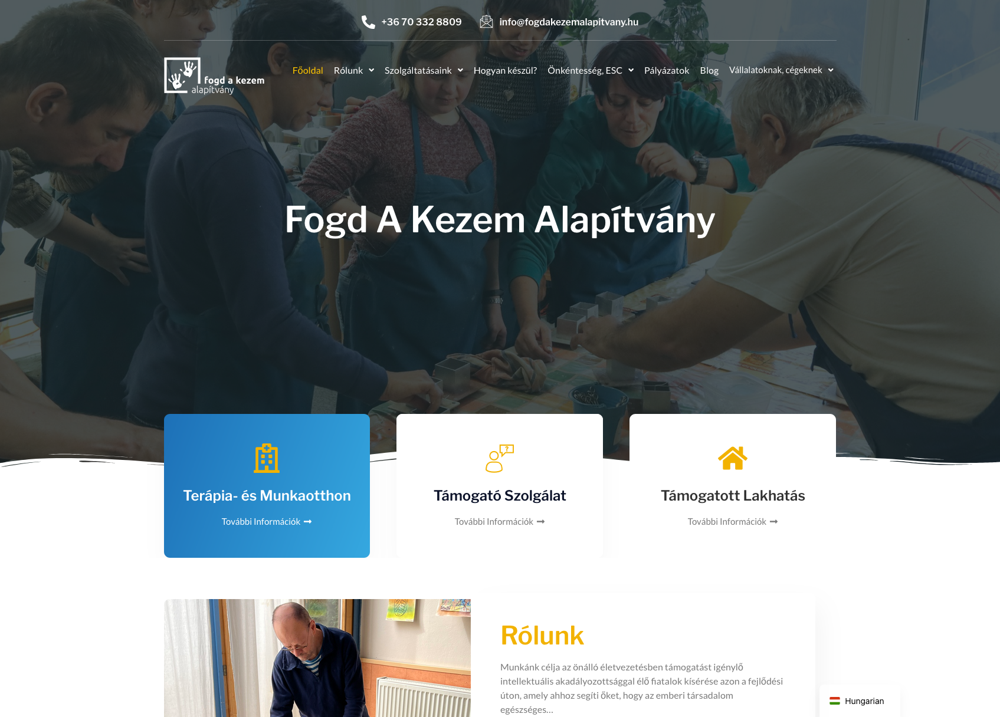
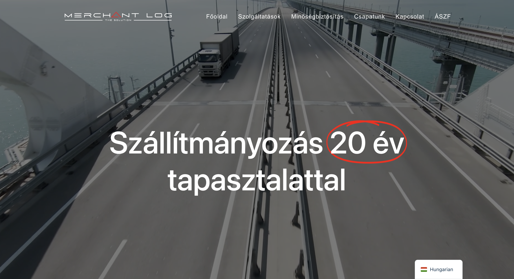
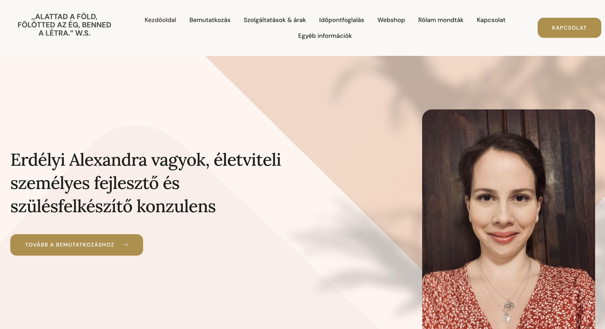

Timár Dávid WordPress Fejlesztő & Designer
Tapasztalt szakembert keresel a csapatodba? Önállóan végigviszem a projekteket a Figma vizuális tervezésétől a tökéletesen működő WordPress oldalig, zökkenőmentes ügyfélkommunikációval.
Mit érdemes tudni rólam?
Elsősorban egyedi WordPress alapú weboldalak fejlesztésével és karbantartásával foglalkozom. Kiemelkedő előnyöm, hogy designerként már több mint 2 év tapasztalattal rendelkezem, így az esztétika és a funkcionalitás kéz a kézben jár a munkáimban. Emellett 1 év intenzív, gyakorlati tapasztalatot szereztem WordPress fejlesztésben és közvetlen ügyfélkommunikációban. Otthonosan mozgok a Figmában, a vizuális koncepció megtervezésétől a stabil kódolásig a teljes folyamatot önállóan átlátom.
Számomra a fejlesztés nem csak technikai feladat. Számos projektet vittem végig úgy, hogy az ügyfelekkel történő egyeztetéstől az átadásig mindent én menedzseltem. Ennek köszönhetően erős problémamegoldó képességgel és ügyfélközpontú szemlélettel rendelkezem. Megbízhatóan és önállóan dolgozom, kész vagyok azonnali értéket teremteni az új munkahelyemen.
Végzettségek és Háttér
WordPress fejlesztés és Projekt menedzsment
1 év éles tapasztalat egyedi WordPress weboldalak fejlesztésében, ügyfelekkel történő kommunikációban és projektek teljeskörű menedzselésében.
Webdesigner
UI/UX alapok, egyedi arculatok és weboldalak vizuális megtervezése Figma és egyéb modern szoftverek segítségével. Vizuális problémamegoldás a weben.
Szoftverfejlesztő és Tesztelő
Komplex programozási és tesztelési ismeretek, kódolási alapelvek és stabil algoritmikus gondolkodás elsajátítása.
Érettségi - Pécs
Gimnáziumi tanulmányok elvégzése és sikeres érettségi vizsga Pécsen.
Legutóbbi Munkáim
Minden projektet az ügyfelekkel történő egyeztetéstől az átadásig én vittem végig, vagy aktívan részt vettem a teljesítésükben. A kártyákra kattintva megnyílnak az élő weboldalak.

RendezvényszervezésOnEvent.hu
Komplex rendezvényszervező és eseménykezelő platform fejlesztése és designja.
 Alapítvány
Alapítvány
Borsohazpecs.hu
Helyi, pécsi alapítvány számára készített egyedi, letisztult bemutatkozó weboldal.

AlapítványFogdakezemalapitvany.hu
Jótékonysági szervezet webes jelenlétének biztosítása, adományozói funkciókkal.
 Szolgáltatás
Szolgáltatás
Selfierent.hu
Fotógép bérbeadással foglalkozó vállalkozás modern bemutatkozó és foglaló oldala.
 Vállalati oldal
Vállalati oldal
Minicokft.hu
Céges portfólió és szolgáltatásokat bemutató reszponzív weboldal elkészítése.

LogisztikaMerchantlog.hu
Logisztikai és szállítmányozási szolgáltató cég professzionális webes arculata.
 Oktatás
Oktatás
School-box.eu
Oktatási tematikájú platform építése, integrált tartalomkezelési megoldásokkal.

Portfólióerdelyialexandra.hu
Személyes szakmai portfólió, letisztult, elegáns és felhasználóbarát dizájnnal.
Redesign & Karbantartás
Meglévő rendszerek továbbfejlesztése, funkcióbővítése és hibajavítása.
-
verebgepesz.hu
Új kód alapú fejlesztések, plusz funkciók integrálása. -
pecstortenetealapitvany.hu
Megjelenés finomítása és folyamatos támogatás.
Eszközök, amiket használok
Beszéljünk a részletekről!
A portfóliómban látható munkáimat nagy precizitással és odafigyeléssel végeztem. Ha egy motivált, önálló fejlesztőt kerestek a csapatba, keressetek az alábbi elérhetőségeken.